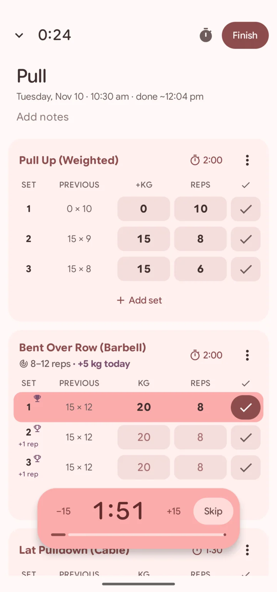
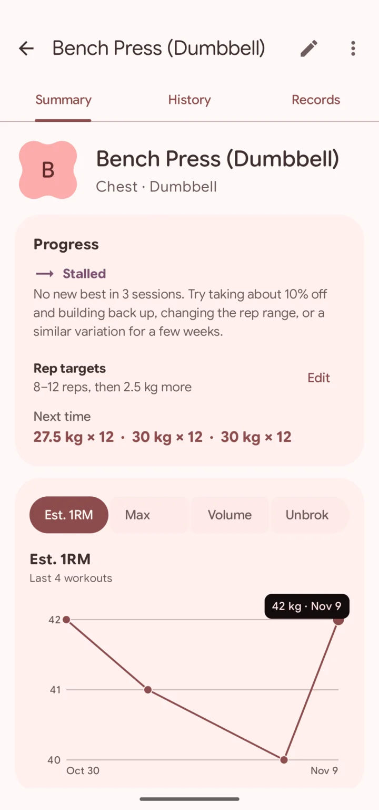
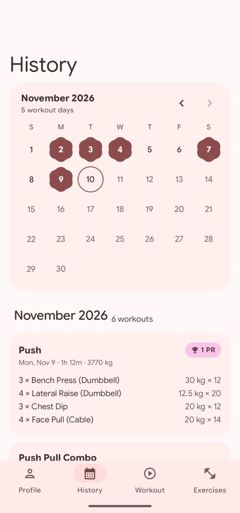
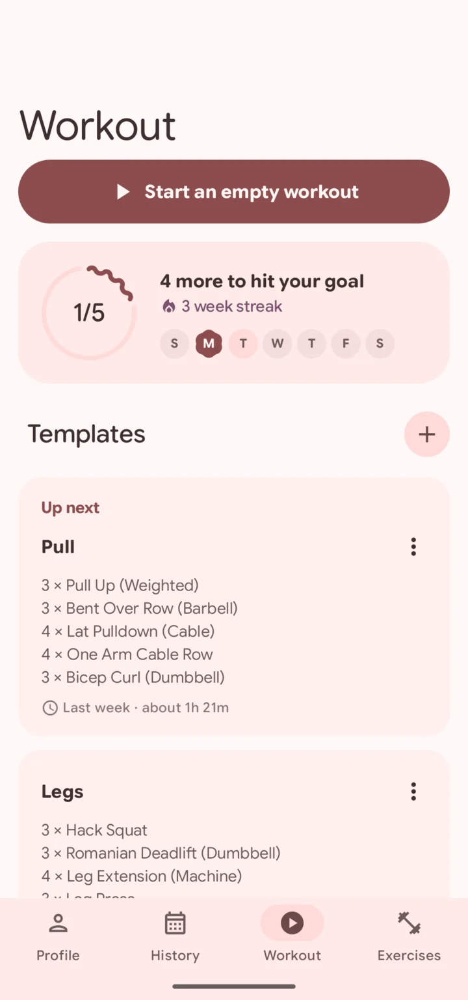
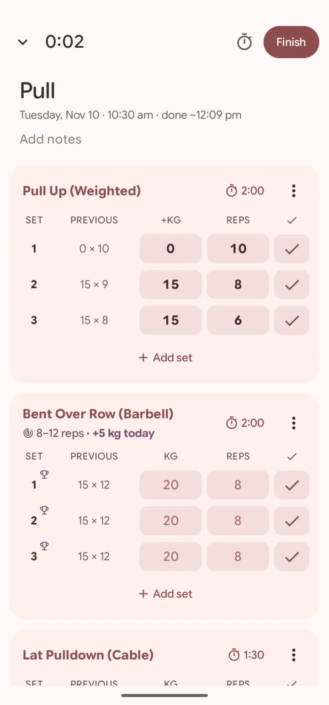
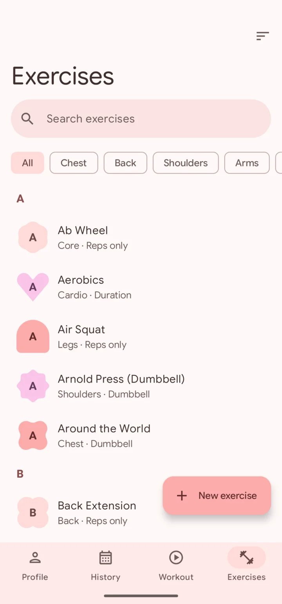

Get Stronger
A workout tracker for Android in the spirit of Strong, built to feel at home on a Pixel. Free, with no account and no internet permission.
Version 1.0.0, 4.6 MB, Android 13 or newer.

It pays attention

155
exercises built in, named the way Strong names them.
- Warm-ups
- Drop sets
- Supersets
- Rest-pauses
A trophy lands on the set the moment you beat a record.

Type 225 for 22.5 and it asks first.
A stalled lift gets a plan.
Bring your Strong history
First, download the APK and let Android install it.
Then, in Strong, open Settings and choose Export data.
Last, pick that CSV in Stronger's Settings.
Exercises are matched by name, unknown ones become custom exercises, and every record is recalculated. Importing the same file again skips the workouts already there.
Everything it does, tab by tab
Download APKWorkout
- Weekly goal
- A goal ring, a seven-day strip and a week streak on the first screen.
- Up next
- The template your rotation says comes next is listed first, with how long it usually takes.
- Templates
- Create, edit, duplicate and preview. Save any past workout as one, or update one with today's sets.
- One reminder
- Half an hour before you usually train, only on days when skipping would break your goal or streak.
- Monthly recap
- Workouts, time, volume, records and biggest one-rep-max gains, shown for the first week of each month.
- Resume
- A workout in progress comes back from anywhere, even after the app is killed.

Live workout
- Previous
- Last time's matching set beside every row. Warm-ups pair with warm-ups. Tap it to copy.
- Rest timer
- Starts when you tick a set. Add or drop 15 seconds, or skip, in the app and from the notification.
- Live records
- A trophy on the set the moment you beat a record, and an outlined one on sets whose numbers would.
- Rep targets
- Double progression: one more rep each session, then more weight and the reps reset.
- Reps left?
- Optional reps in reserve after a working set. Easy sets make the next target jump twice as far.
- Finish time
- "Done ~7:40 PM", estimated from your usual pace per set, in the header and the notification.
- Live Update
- An ongoing notification with rest progress, what's up next and a Complete set button, promoted on Android 16.
- Forgot to finish?
- After an hour with no set ticked it asks "Still training?" and trims the idle time off the workout.

Exercises
- 155 built in
- Named like Strong's, "Bench Press (Barbell)", plus your own custom exercises.
- Find fast
- Search, body-part filters, and sorting by name, frequency or recency.
- Progress chart
- Estimated one-rep max, max weight and volume. Reps or time for the other categories.
- Plateaus
- Each lift is marked progressing, stalled or going backwards, with what to try next.
- Deload hint
- When several lifts stall at once, the Workout tab suggests a deload week.
- Records
- Full history, records and a rep-records table for every exercise.

History
- Calendar
- A month view of the days you trained.
- Workout cards
- Grouped by month, with best sets and how many records each workout set.
- Every set
- Workout detail with each set and its estimated one-rep max.
- Edit the past
- Change or delete an old workout and the trophies after it are awarded again.
- Do it again
- Repeat a past workout, or save it as a template.
- Profile
- All-time totals, workouts per week against your goal, recent records and a plate calculator.
Body and health
- Body weight
- A smoothed trend, so daily swings don't mislead, with 7, 30 and 90-day changes.
- Measurements
- Body fat and tape measurements such as waist, chest and arms, in cm or inches.
- Workouts out
- Finished workouts are written to Health Connect as exercise sessions. Edits and deletes follow.
- Weight in
- Weight from scales and other apps comes in through Health Connect, deletions included.
- Recovery
- Last week's cardio against 150 minutes, plus steps, resting heart rate and sleep.
Data
- Strong import
- Strong's CSV export, in both the older comma and newer semicolon formats.
- Backup
- Everything, measurements included, to one JSON file you can restore on any phone.
- Units
- kg or lb, default rest, weekly goal, bar weight and the plates you own.
- Offline
- The app has no internet permission. Your log stays on the phone unless you export it.
- No account
- Nothing to sign up for and nothing to sign in to.
Before you install
Is it really free?
Yes. There is no paid tier, no ads and no account. The code is on GitHub for anyone to read or build.
Why isn't it on Google Play?
It is one person's project and is shared as an APK from GitHub. The release is signed with a debug key for now, so Android or Play Protect may ask you to confirm the install. If you would rather not trust a download, build it from the source.
How do I install an APK?
Open the downloaded file on your phone. Android asks once whether your browser may install apps. Allow it, then tap Install.
Which phones does it run on?
Anything on Android 13 or newer. It is designed around Pixels: it takes its colours from your wallpaper, and the workout notification becomes a Live Update on Android 16.
Why is everything pink in the screenshots?
Because that is the wallpaper on the phone they were taken on. Stronger uses Material You, so on your phone it wears your colours.
Where does my data go?
Nowhere. The app has no internet permission. Your log lives on your phone, Health Connect sync is optional, and backups are a JSON file you keep.
Is this made by the Strong team?
No. Stronger is an independent app made by someone who likes how Strong works. It reads Strong's CSV export and nothing else of theirs.
Does it work in pounds?
Yes. Pick kg or lb in Settings, along with your bar weight and the plates your gym has, and the plate calculator follows.